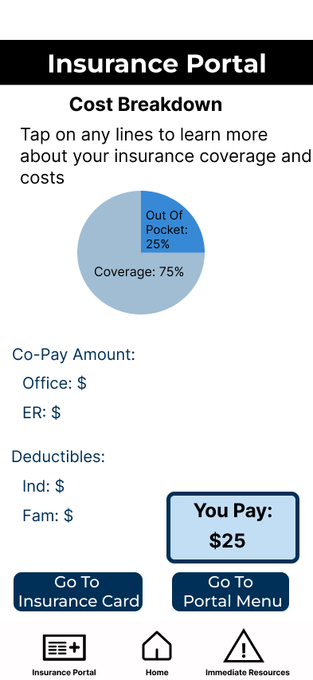
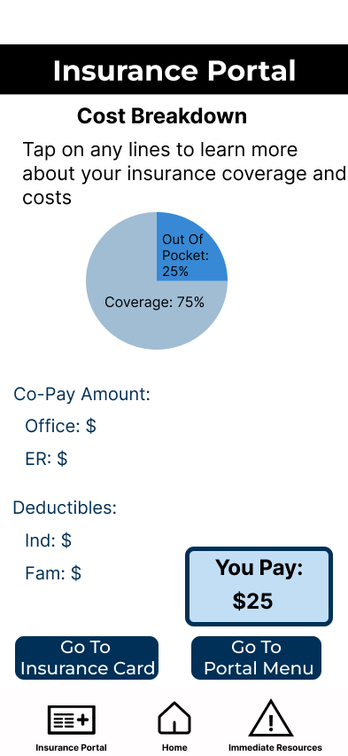

Student Centric Health
Problem space: We found that GT students are facing challenges with the healthcare system available to them.
This is a significant issue as we found varied problems in the healthcare system: students are delaying healthcare treatment,
having difficulties scheduling an appointment, having trouble balancing academics and health, and do not have financial literacy about insurance
and healthcare costs. It is important to have a more efficient healthcare system for students and provide students with an overall better experience
with healthcare.
User Group: GT students who use on-campus and off-campus healthcare services.
Identify
From interview and survey data, we found that the main 3 issues with the healthcare system on campus for GT students are the following:
- Difficulties scheduling appointments that work with a student’s schedule
- Balancing health and academics
- Financial literacy
We came up with the following project goals:
- Create a user-friendly and user-centered mobile application
- Utilizing user research and data throughout the design process
- Developing an efficient system that provides users with a simpler way of managing healthcare information
Design goals:
- Student-Centric Immediate Healthcare
- Accessible and Convenient Student-Friendly Booking Services
- Financial transparency behind a Healthcare Visit
User Testing
- Evaluation Method: Think-aloud
- This method gave us great insight into our user’s thought processes.
- Number of Participants: 5
- computer science majors, 1 business major, 1 mechanical engineer major
- 3 in-state and 2 out-of-state students
- Key Finding 1: The wording/directions on some screens are a little unclear, especially on the cost breakdown page.
- Key Finding 2: Users would like to have an option to submit their schedules when they first create an account and edit it anytime.
- Key Finding 3: The immediate resource and insurance portal taskbar icons are confusing for some users.
Future Goals
- Revision 1: Make wording for screens and buttons clearer. Replace abbreviations with full words.
- Revision 2: Instead of allowing the user to input their schedule only during the appointment scheduling feature, we will give them the option to input their schedule upon account creation. They will also be able to edit their schedule by going to their profile.
- Revision 3: Add labels under taskbar icons to improve clarity.
 Personal Projects
Resume
Personal Projects
Resume


 
